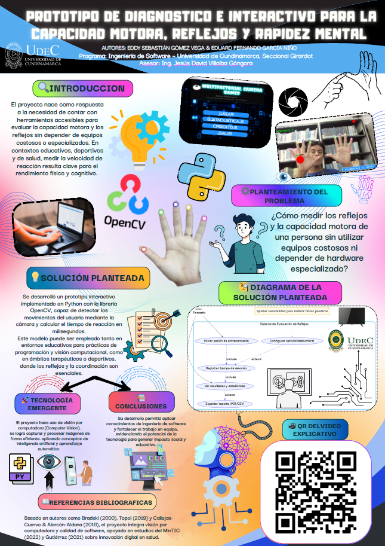

Ecosistema diseñado para medir la respuesta neuromuscular mediante visión artificial en tiempo real.
Explorar TecnologíaNeuroFit nace como una respuesta técnica a la necesidad de modernizar los procesos de diagnóstico neuromuscular. El proyecto consiste en el desarrollo de un ecosistema digital integral que utiliza Visión Artificial para cuantificar variables motrices.
Desde la perspectiva de arquitectura de software, hemos optado por un stack tecnológico robusto: Python/Flask en el Backend y OpenCV/Mediapipe para el procesamiento cinético.

Detrás de NeuroFit se encuentra un equipo de estudiantes de Ingeniería de Software de la UDEC. Eduard Garcia (Arquitecto de Software) y Eddy Gomez (Gestión Estratégica) combinan habilidades técnicas para transformar una idea en un impacto social.
| Riesgo | Nivel | Mitigación |
|---|---|---|
| Sesgo Médico | Alto | Implementación de Disclaimer y perfiles por rango de edad. |
| Latencia Hardware | Alto | Normalización de datos mediante algoritmos de compensación. |
Mapeo de 33 puntos corporales. (Clic para ver detalle)
Algoritmos de compensación activa de input-lag.
Validación en tiempo real y cifrado de datos clínicos.
Visualización de métricas de evolución en tiempo real.
Ajuste automático de iluminación y distancia mediante Visión Artificial.
Exportación formal de diagnósticos basados en parámetros neurológicos.
Análisis de progresión histórica entre sesiones de evaluación.
Permisos diferenciados según las características del usuario (Médico/Paciente).
Mapeo de 33 puntos corporales para un diagnóstico físico fiable.
Almacenamiento estructurado de perfiles clínicos y logs de rendimiento.
Despliegue del backend en un entorno Flask para facilitar la gestión y mantenimiento.
Desarrollador principal y arquitecto de software.
Gestión de proyecto y soporte estratégico.